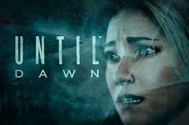
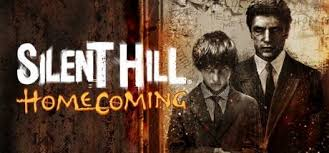
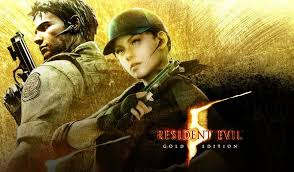

Until Dawn

Until Dawn es un videojuego narrativo de los géneros survival horror y drama interactivo, desarrollado
por Supermassive Games y publicado por Sony Computer Entertainment, para PlayStation 4.
Fue originalmente programado para ser lanzado en la consola de PlayStation 3, pero en agosto de 2014, el
juego fue re introducido como exclusivo para la PlayStation 4. Fue lanzado el 25 de agosto en
Norteamérica y el 26 de agosto de 2015 en el resto del mundo.
Until Dawn generó una respuesta positiva de la crítica después de su lanzamiento, con elogios dirigidos
a los niveles gráficos visuales, a la elección mecánica del juego, a sus elementos de terror, la música,
la actuación, voces y diseño de juego.
La mayor parte de las críticas que el juego atrajo fue referente a la historia, sobre todo la segunda
mitad, los ángulos de cámara, movimientos de los personajes y la trama parcialmente lineal.
| Requisitos |
|
Mínimos |
Recomendados |
| CPU |
Intel Core i5 2400 @ 3.1 GHz o AMD FX 6350 @ 3.9 GHz |
Intel Core i7-4790 @ 3.6 GHz o AMD Ryzen 5 1600 @ 3.2 GHz |
| RAM |
4GB |
8GB |
| SO |
Windows 7 SP1, Windows 8.1, Windows 10 (64bit solamente) |
| Tarjeta gráfica |
NVIDIA GeForce GTX 670 (2GB) o AMD Radeon R9 270X (2GB) o superior |
NVIDIA GeForce GTX 970 (4GB) o AMD Radeon R9 290X (4GB) o superior |
| Disco Duro (Espacio libre) |
30GB |
Silent Hill

Silent Hill es una franquicia de terror creada por Keiichiro Toyama y publicada por Konami y su
subsidiaria, Konami Digital Entertainment.
Los primeros cuatro títulos de la serie, Silent Hill, 2, 3 y 4: The Room, fueron desarrollados por Team
Silent, grupo interno perteneciente a KCET.
Las obras posteriores fueron creadas y/o desarrolladas por grupos no relacionados con el equipo
original. En dichas obras se incluyen historietas, filmes y videojuegos.
Silent Hill transcurre en la ciudad ficticia homónima, localizada en Estados Unidos. La serie está
fuertemente influenciada por el terror psicológico y presenta a protagonistas sin cualidades o destreza
física por sobre lo normal; en contraste con otros títulos de survival horror.
Las mecánicas de juego giran en torno a resolver acertijos, explorar el mapa en busca de objetos
interesantes y combatir monstruos. 20 años después de su creación, un modder encontró monstruos inéditos
que Konami había mantenido dormidos en los ficheros del juego.
| Requisitos |
|
Mínimos |
Recomendados |
| CPU |
Pentium 3 @ 1 GHz o equivalente |
Pentium 4 @ 2 GHz o equivalente |
| RAM |
256MB |
512MB |
| SO |
Windows 98/ME/2000/XP |
| Tarjeta gráfica |
32 MB de vRAM (GeForce 3 Ti/Radeon 8500) |
64 MB (GeForce 4 Ti/Radeon 8500) |
| Disco Duro (Espacio libre) |
5GB |
Resident Evil 5

Resident Evil 5 —cuyo título original es Biohazard 5 es un videojuego de acción-aventura del estilo
survival horror desarrollado por Capcom y distribuido por la misma en colaboración con THQ Asia Pacific.
El título es precedido por Resident Evil 4 y sucedido por Resident Evil 6, y se convierte en la quinta
entrega numérica de la serie principal.
Se lanzó oficialmente para las consolas de PlayStation 3 y Xbox 360 el 5 de marzo de 2009 en Japón, y el
13 de marzo del mismo año en Norteamérica y Europa. Posteriormente se diseñó una versión para Microsoft
Windows, la cual se estrenó el 15 de septiembre de 2009 en Norteamérica, el 17 de septiembre de 2009 en
Japón y un día después en el continente europeo.
Debido al gran éxito, la compañía decidió lanzar una edición especial bajo el nombre de Resident Evil 5:
Gold Edition la cual contiene un nuevo capítulo y una campaña que siguen con la trama del juego.
Conjuntamente se han estrenado diversos contenidos descargables, disponibles en Xbox Live Marketplace y
PlayStation Network, todos ellos incluyen nuevas modalidades, personajes y secretos que amplían su
rejugabilidad.
La historia del juego sigue a Chris Redfield, uno de los supervivientes del desastre de la mansión
Spencer que se ha convertido en miembro y fundador de la B.S.A.A.; una fuerza especial dedicada a
combatir el bioterrorismo en todo el mundo. Éste es enviado junto con Sheva Alomar a investigar una
amenaza terrorista en Kijuju, un pueblo ficticio ubicado en el continente africano.
Al llegar a dicho lugar, son atacados por sus habitantes que han sido infectados por una extraña especie
de parásito que los vuelve violentos. Al igual que otros títulos de la serie, el videojuego es de
acción-aventura del estilo survival horror. Siguiendo los pasos de su antecesor, incluye inmensos y
dinámicos escenarios debido a que la trama se basa en una aldea africana.
El sistema de juego es similar a Resident Evil 4, con la diferencia de que se ha añadido un personaje
que acompaña al protagonista en toda la historia. Esto puede favorecer o perjudicar en ciertos aspectos
al jugador, siendo uno de los beneficios la ayuda que brinda Sheva en ciertas ocasiones, mientras que
uno de sus contras es el racionamiento de la munición para ambos personajes. Por otro lado, incluye una
gran variedad de contenido desbloqueable como minijuegos, trajes secretos, armas infinitas, texturas
para los escenarios y otros extras disponibles.
Resident Evil 5 tuvo un buen éxito comercial. Actualmente, ha vendido más de 5,80 millones de copias a
nivel mundial.
Es el tercer videojuego de la franquicia que ha logrado vender dicha cantidad gracias a todas sus
versiones disponibles.
Sin embargo es el cuarto título de la serie que sobrepasa la marca de los 4 millones de unidades
comercializadas; solamente en la versión de PlayStation 3, después de Resident Evil 4, Resident Evil 2 y
Resident Evil, de los cuales sus cifras ascienden a más de 5 millones de unidades cada uno.
Resident Evil 5 recibió diversas críticas por parte de sitios web importantes especializados en
videojuegos como Metacritic, GameSpot, GameRankings, IGN, MeriStation, Vandal, 3DJuegos, entre otros. La
Revista Oficial de Xbox felicitó al equipo de desarrollo por elaborar magníficas gráficas tanto para los
escenarios como para los personajes;
a pesar de su buen desempeño comercial, recibió alegaciones de racismo debido a que los enemigos en su
mayoría son de piel negra, después del estreno de varias demostraciones del juego, varios críticos lo
clasificaron de contenido racista. Por otro lado, al igual que su antecesor, ha logrado revolucionar el
universo Resident Evil, siendo uno de los títulos más centrado en la acción, sin dejar a un lado la
esencia del survival horror.
| Requisitos |
|
Mínimos |
Recomendados |
| CPU |
Intel Pentium AMD Athlon64 x2 |
Intel Core2Quad o superior / AMD Phenom x4 ó superior |
| RAM |
1GB |
2GB |
| SO |
Windows 7, Windows 8.1, Windows 10 |
| Tarjeta gráfica |
NVIDIA GeForce 6800 series ó ATI Radeon HD 2400 Pro. VRAM (512MB) |
NVIDIA GeForce 9800 series ó superior, ATI Radeon HD 4800 series o superior. VRAM (512MB) |
| Disco Duro (Espacio libre) |
5GB |